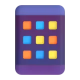
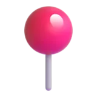

3 падежа немецкого в одной таблице
Nominativ, Akkusativ и Dativ для всех родов и множественного числа, у каждой формы пример. В Akkusativ меняется только der → den.
- 3падежа
- 12форм с примером
- 6случаев «когда какой»


 340+ гайдов A0–C1
340+ гайдов A0–C1 7500+ слов с аудио
7500+ слов с аудио
офлайн в Notion- Goethe · telc · ÖSD
 доступ навсегда
доступ навсегда обновления бесплатно
обновления бесплатно
Две платформы: вместе дешевле
По отдельности A0–A2 и B1–C1 стоят по 20 €. Вместе — 30 € вместо 40 €, и бонусом раздел A0–A2 на украинском.
Нажми на карточку, чтобы убрать или добавить платформу. Один платёж, доступ навсегда.
- 340+ гайдов A0–C1
- 7500+ слов с аудио
- фильмы, книги, подкасты по уровням
- трекер и повторения в Notion
- обновления бесплатно
Как выучить падежи
- 01
Слово с артиклем
Без рода падеж не выбрать: учи der Tisch, а не просто Tisch.

02Сначала Akkusativ
Меняется только der → den. Потом Dativ: dem, der, dem, den + -n.
- 03
Глагол и предлог решают
helfen, mit, bei — Dativ; sehen, für, ohne — Akkusativ. Учи их парами с падежом.

Пауза перед каждым артиклем?
Мысль готова, а перед каждым существительным ты замираешь: den или dem? В итоге говоришь медленно или выбрасываешь артикли совсем. В Stellas к каждой теме грамматики видео и упражнение с ответами: падеж отрабатывается, пока выбор не станет быстрым.
Темы по порядку от A0 до C1. Прогресс по темам виден в Notion.
Подготовка к экзамену внутри
В telc Deutsch B1 есть часть Sprachbausteine: пропуски в тексте, где важны грамматика и окончания. В платформе есть отдельный блок по экзаменам: формат, типичные ошибки, шаблоны писем и устной части.
- 120гайдов Goethe
- 89гайдов telc и DTZ
- 60гайдов ÖSD
 40пробных тестов с разбором
40пробных тестов с разбором
- Lesen
- Hören
- Schreiben
- Sprechen
«Мои ошибки» собирает вопросы, где ты ошибся. Повторяешь их перед экзаменом.
Что пишут ученики


Частые вопросы
А где Genitiv?
Genitiv в разговоре встречается реже: часто его заменяют Dativ с von (das Auto von meinem Bruder). На этой странице три падежа, которые нужны с A1.
Почему den Kindern, а не den Kinder?
В Dativ множественного числа к слову добавляется -n, если оно ещё не кончается на -n или -s: den Kindern, den Frauen, den Autos.
Как понять, Wo или Wohin?
Если есть движение куда-то — Wohin, Akkusativ: Ich gehe ins Kino. Если место — Wo, Dativ: Ich bin im Kino.
Что такое zum и im?
Слияния предлога и артикля: zu dem = zum, zu der = zur, in dem = im, an dem = am, in das = ins.